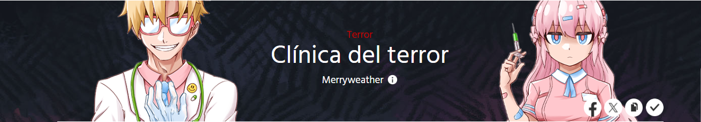

|  |
"Clínica del Terror" es un webtoon que mezcla el terror, lo sobrenatural y la comedia, resultando en una narrativa tanto macabra como ingeniosa. La historia se centra en una clínica misteriosa, dirigida por el excéntrico y astuto Dr. Albright y su fiel asistente Bianca. En este lugar se tratan padecimientos poco comunes, pero no del tipo que se encuentran en hospitales normales. Aquí, los pacientes llegan con enfermedades sobrenaturales, maldiciones aterradoras o problemas provocados por criaturas de otro mundo. Cada episodio presenta un nuevo caso, cada uno más extraño y escalofriante que el anterior, pero siempre resuelto con un toque de humor negro.
"Clínica del Terror" tiene una estructura episódica, donde cada capítulo presenta un caso único y extraño que los protagonistas deben resolver. Actualmente, el webtoon está en su segunda temporada y se publica regularmente en la plataforma WEBTOON
introduce a los lectores al peculiar mundo de esta clínica única. En este capítulo, conocemos al Dr. Albright y a Bianca, quienes enfrentan su primer caso: un paciente con un "cerebro gritón".
En este capítulo, un misterioso chico nuevo llega a la ciudad. Aunque a simple vista parece encantador y de apariencia perfecta, se revela que en realidad es un monstruo que utiliza hormonas especiales para manipular cómo lo perciben los demás
Bianca está viendo una película futurista en la que el protagonista realiza un viaje al futuro, específicamente 1,000 años adelante en el tiempo. Al llegar, descubre un mundo donde los seres humanos viven en cápsulas y sus vidas transcurren de manera completamente artificial dentro de una simulación.
Sarah tiene un parásito ocular que convierte su entorno en un anime estilo Sailor Moon. Bianca lo elimina y explica cómo el parásito se alimenta de la nostalgia.
Bianca visita una tienda donde las personas viven en cápsulas de realidad aumentada, sumergidas en simulaciones y mantenidas automáticamente, similar a la película vista antes.
Los personajes principales del webtoon son:
El excéntrico doctor a cargo de la clínica. Es inteligente, astuto y con métodos poco convencionales para tratar las enfermedades sobrenaturales que llegan a la clínica. Aunque parece misterioso, tiene un lado humano que se revela gradualmente.
La joven y enérgica asistente del Dr. Albright. Su humor ácido y su capacidad para manejar las situaciones más extrañas la convierten en una compañera indispensable para el doctor.
A lo largo de los episodios, se presentan diversos pacientes con casos únicos y aterradores, desde maldiciones hasta condiciones sobrenaturales que desafían toda lógica. Cada uno aporta un toque único a la trama.
Se convierte en un personaje en sí misma. Su atmósfera tétrica y diseño peculiar esconden secretos que forman parte importante de la narrativa.
A medida que avanza la serie, se introducen personajes secundarios enigmáticos que plantean preguntas sobre el pasado del Dr. Albright y el propósito verdadero de la clínica.
Podemos encontrar algunos videos que hablan sobre el webtoon:
Si ya leiste el webtoon, te invito a que nos dejes tu opinion a continuación: